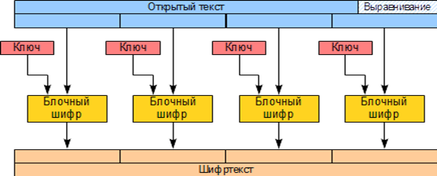
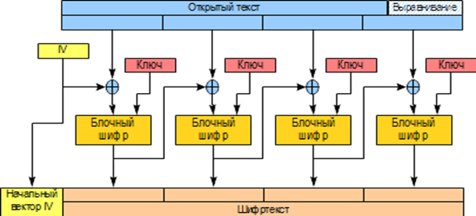
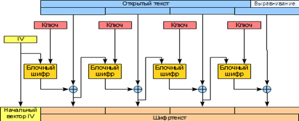
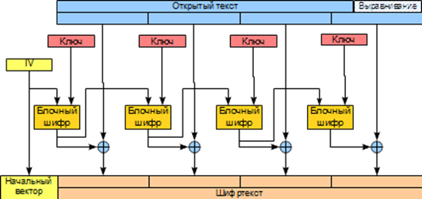
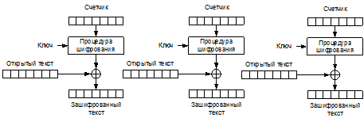

Блочные шифры могут использоваться различными способами для получения шифртекста с разными свойствами. Основными из них являются:
− возможность распараллеливания;
− скрытие структуры исходного текста (если структура не скрывается, одинаковые входные блоки преобразуются в одинаковые выходные, что дает аналитику некоторую информацию о природе текста);
− возможность/невозможность скрытой манипуляции блоками (в некоторых режимах можно переставить местами несколько блоков шифртекста и это не будет заметно после расшифрования);
− распространение ошибок (в некоторых режимах ошибка вызывает искажение не только в текущем блоке, но и в одном или нескольких следующих);
− возможность предвычислений.
Наиболее простой режим – это электронная кодовая книга (ECB) (рис. 3.7). В этом режиме открытый текст разбивается на блоки и каждый блок шифруется одним и тем же ключом. Если длина открытого текста некратна длине блока, то недостающая часть заполняется нулями с добавлением в последних байтах реальной длины открытого текста.
 |
Рис. 3.7. Схема преобразования блоков открытого текста в режиме ECB |
Преимущества: обладает высокой скоростью, имеет возможность распараллеливания, не распространяет ошибок, не имеет предвычислений.
Недостатки: не скрывает структуру данных, дает манипулировать блоками, не имеет предвычислений.
Режим сцепления блоков (CBC) представлен на рис. 3.8. В этом режиме открытый текст перед шифрованием складывается по модулю 2 с предыдущим блоком шифртекста. Первый открытый текст складывается со случайным начальным вектором. Начальный вектор не является секретом и передается вместе с шифртекстом в открытом виде.
 |
Рис. 3.8. Схема преобразования блоков открытого текста в режиме CBC |
Преимущества: скрывает структуру данных, не дает манипулировать блоками.
Недостатки: не имеет возможности распараллеливания, распространяет ошибку на один блок вперед, не имеет предвычислений.
Режим обратной связи по шифртексту (CFB) представлен на рис. 3.9.
 |
Рис. 3.9. Схема преобразования блоков открытого текста в режиме CFB |
Этот режим соответствует режиму гаммирования с обратной связью алгоритма ГОСТ 28147−89. В этом режиме блочный шифр соответствует самосинхронизирующемуся поточному шифру.
Преимущества: скрывает структуру данных, не дает манипулировать блоками.
Недостатки: не имеет возможности распараллеливания, распространяет ошибку на все блоки перед сбойным вперед, не имеет предвычислений.
На рис. 3.10 представлен режим обратной связи по выходу (OFB). В этом режиме блочный шифр работает как генератор гаммы, не зависящей от открытого или шифртекста. Шифрование выполняется путем сложения гаммы с открытым текстом по модулю 2. Этот режим является чувствительным к ошибкам вида вставка/пропуск. При появлении такой ошибки весь последующий шифртекст будет расшифрован неверно. Так как гамма не зависит от открытого или шифртекста, то возможно ее вычисление заранее. Это позволяет достигнуть максимально возможной скорости шифрования, состоящего из одной операции сложения по модулю 2.
 |
Рис. 3.10. Схема преобразования блоков открытого текста в режиме OFB |
Преимущества: скрывает структуру данных, не дает манипулировать блоками, допускает возможность предвычислений, не распространяет ошибку.
Недостатки: не имеет возможности распараллеливания.
Режим счетчика (CTR (CounTeR)) представлен на рис. 3.11. В этом режиме выполняется операция шифрования начального вектора увеличенного на номер блока, результат шифрования складывается по модулю 2 с открытым текстом для получения шифртекста.
 |
Рис. 3.11. Схема преобразования блоков открытого текста в режиме CTR |
Преимущества: скрывает структуру данных, не дает манипулировать блоками, имеет возможность распараллеливания, не распространяет ошибку.
Недостатки: не допускает возможности предвычислений.
Также этот режим позволяет организовать random access, т. е. расшифровать или зашифровать произвольный блок.
Различные режимы шифрования следует применять осмысленно. Например, для шифрования данных близких к случайным, таких как ключи шифрования, предварительно сжатые данные и т.п., могут быть зашифрованы в режиме ECB. Если данные являются файлом стандартного формата (doc, pdf и т. д.), то следует использовать режим, скрывающий структуру данных, например, CBC. Пример правильного и неправильного выбора режима шифрования приведен на рис. 3.12. На нем видно, что шифрование в режиме ECB не полностью скрывает информацию об открытом тексте, так как на рисунке видны контуры изображения и надпись.
|
исходное изображение |
шифрование в режиме ECB |
шифрование в режиме CBC |
Рис. 3.12. Пример шифрования изображения в режиме ECB и CBC
Кроме рассмотренных существуют и другие режимы со своими уникальными свойствами, мы же рассмотрели наиболее известные и широко распространенные из всех режимов.